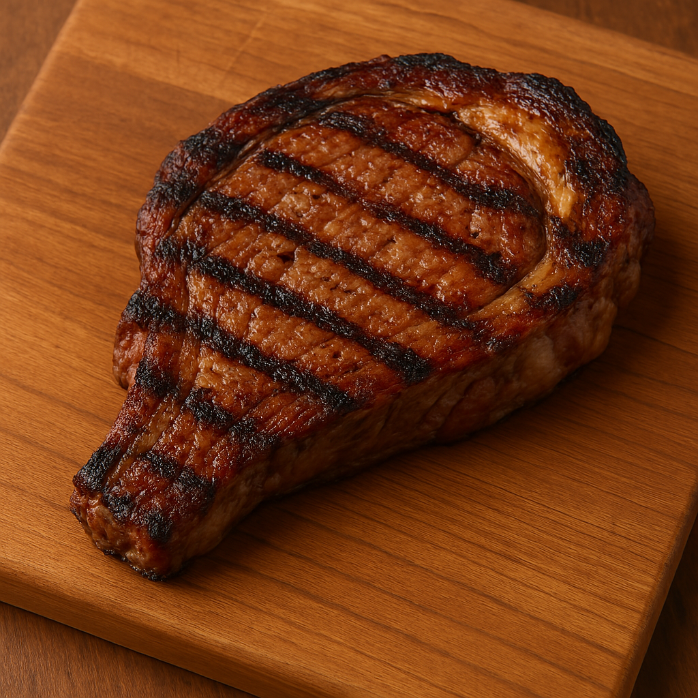

Your Result: Ribeye
Your Marbling Score: 0
With a high marbling score, you're comparable to a ribeye steak! This premium cut is known for its abundant fat marbling throughout, creating an incredibly juicy, tender, and flavorful experience that melts in your mouth.
Ribeye Characteristics:
- Exceptional fat marbling throughout
- Rich, buttery flavor profile
- Supreme tenderness
- Considered one of the most premium beef cuts
- Similar cuts include: Prime Rib, Delmonico, and Cowboy Steak
Cooking Tips:
Best cooked to medium-rare for optimal flavor and texture. The high fat content makes it forgiving to cook, as it stays juicy even if slightly overcooked. The fat will render beautifully when properly prepared, creating an exceptional dining experience.